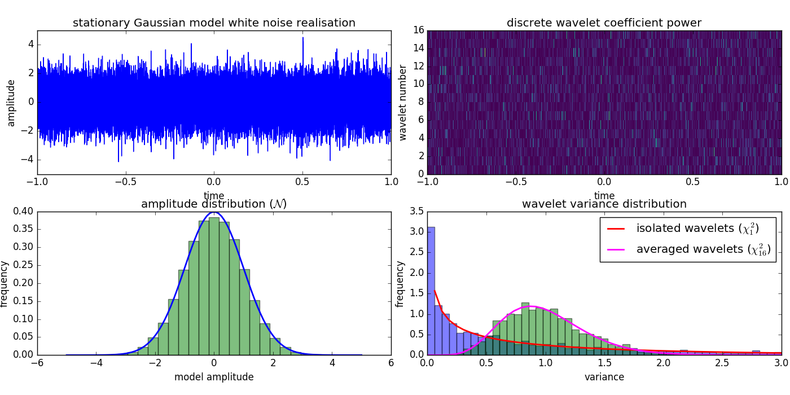
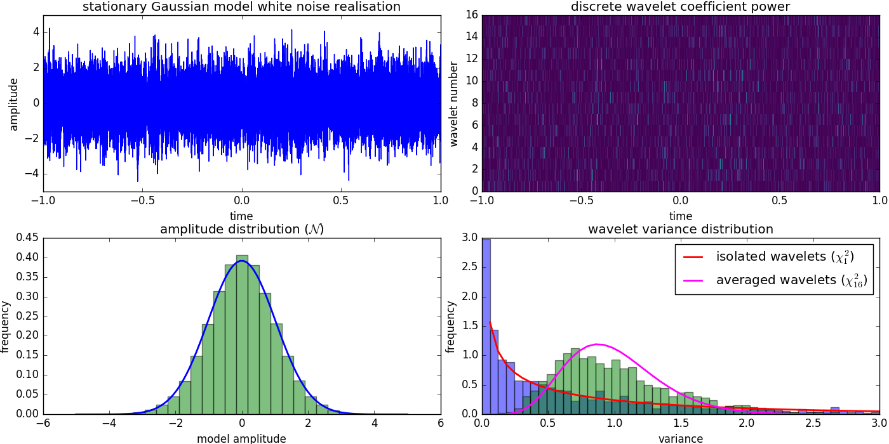

This is a simple test that I have done that plots wavelet statistics for a stationary white noise random model realisation. In this case, the expected statistics of the model amplitudes is a Gaussian (normal) distribution. Due to the orthogonality of the daubechies wavelet basis (using PyWavelets), the coefficient power of one wavelet follows a Chi square distribution with 1 degree of freedom. This is simply the distribution of the square of normal distributed independent random variables. Finally, the distribution of the power of the average of all wavelets at one time follows a Chi square distribution with the number of wavelets as degrees of freedom (16 in this case). The plot and the attached script shows these prediction compared to a measured distribution of synthesized white noise.

Now imagine that the Gaussian distributed White noise is modulated (multiplied) in time by another (smooth) oscillatory function. This will not necessarily be visible in the distribution of the model itself, because the overall amplitudes might stay unchanged. Different statistics, however, do change: first, modulation in time will affect all frequencies in the same manner. This means that we introduce a correlation between frequencies that Gaussian white noise doesn’t have. This correlation in turn means, that the averages of the 16 wavelets at each time are not chi square distributed anymore, which can be tested. This example is shown in the image below. Another possible statistic would be to check whether wavelet components that follow each other are correlated and not chi square distributed anymore. This could be another hint for a modulating background function.

Here is the script:
"""
This script demonstrates wavelet statistics of a white noise stationary random model
"""
import numpy as np
import matplotlib.pyplot as plt
from scipy.stats import chi2, norm
import pywt
def main():
# prepare time grid:
#np.random.seed(0)
tmax = 1.
npts = 2**15
times = np.linspace(-tmax, tmax, npts)
dt = times[1] - times[0]
# generate real stationary time seris:
freqs = np.fft.rfftfreq(npts, d=dt)
nfreqs = len(freqs)
coeffs = np.random.normal(loc=0., scale=1., size=nfreqs) + \
1j * np.random.normal(loc=0., scale=1., size=nfreqs)
power = np.abs(coeffs)**2
coeffs /= np.sqrt(2. * np.sum(power))
coeffs *= npts
model = np.fft.irfft(coeffs)
coeffs = np.fft.fft(model)
# get discrete wavelet packet transform
wavelet = 'db4'
level = 4
order = "freq"
# Construct wavelet packet
wp = pywt.WaveletPacket(model, wavelet, 'symmetric', maxlevel=level)
nodes = wp.get_level(level, order=order)
labels = [n.path for n in nodes]
wl_coeffs = np.array([n.data for n in nodes], 'd')
wl_coeffs = np.abs(wl_coeffs)**2
nlevels, nnodes = wl_coeffs.shape
# statistics:
# 1a) model histogram
model_bins = np.linspace(-5., 5., 30)
model_hist, _ = np.histogram(model, bins=model_bins)
model_width = model_bins[1] - model_bins[0]
model_hist = model_hist.astype(np.float) / model_width / npts
# 1b) model distribution
values = np.linspace(-5., 5., 100)
sigma = np.sum(np.abs(coeffs)**2) / npts**2
model_pdf = norm.pdf(values, loc=0, scale=sigma)
# 2a) wavelet histogram
wl_bins = np.linspace(0., 3., 50)
wl_hist1, _ = np.histogram(wl_coeffs[0, :], bins=wl_bins)
wl_hist2, _ = np.histogram(np.mean(wl_coeffs, axis=0), bins=wl_bins)
wl_width = wl_bins[1] - wl_bins[0]
wl_hist1 = wl_hist1.astype(np.float) / nnodes / wl_width
wl_hist2 = wl_hist2.astype(np.float) / nnodes / wl_width
# 2b) wavelet distribution
chi2_pdf1 = chi2.pdf(wl_bins, 1)
chi2_pdf2 = chi2.pdf(wl_bins * nlevels, nlevels) * nlevels
# plotting
fig, axes = plt.subplots(2, 2, figsize=(14, 7))
axes[0, 0].plot(times, model, label='stationary random model')
axes[0, 0].set(xlabel='time', ylabel='amplitude',
title='stationary Gaussian model white noise realisation')
axes[1, 0].bar(model_bins[:-1], model_hist, alpha=0.5, width=model_width,
color='green')
axes[1, 0].plot(values, model_pdf, lw=2)
axes[1, 0].set(xlabel='model amplitude', ylabel='frequency',
title=r'amplitude distribution ($\mathcal{N}$)')
axes[0, 1].imshow(wl_coeffs, interpolation='nearest', cmap='viridis',
aspect="auto", origin="lower", extent=[-tmax, tmax, 0,
len(wl_coeffs)])
axes[0, 1].set(xlabel='time', ylabel='wavelet number',
title='discrete wavelet coefficient power')
axes[1, 1].bar(wl_bins[:-1], wl_hist1, width=wl_width, alpha=0.5,
color='blue')
axes[1, 1].bar(wl_bins[:-1], wl_hist2, width=wl_width, alpha=0.5,
color='green')
axes[1, 1].plot(wl_bins, chi2_pdf1, lw=2, c='red',
label=r'isolated wavelets ($\chi^2_{:d}$)'.format(1))
axes[1, 1].plot(wl_bins, chi2_pdf2, lw=2, c='magenta',
label=r'averaged wavelets ($\chi^2_{%d}$)'%nlevels)
axes[1, 1].set(xlabel='variance', ylabel='frequency',
title='wavelet variance distribution')
axes[1, 1].legend()
fig.tight_layout(pad=0.1)
plt.show()
if __name__ == "__main__":
main()</code>